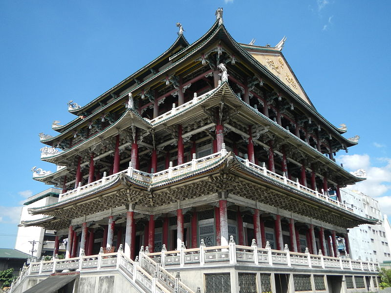

Caloocan South
Caloocan South Tourist Spot
Return to the Map

Taoist Temple
This is no ordinary Taoist temple, however. The architects of this temple went all out to create a 3-story masterpiece. This temple has been a place of worship for the Chinese and the Chinese-Filipino residents of Caloocan for almost a century.